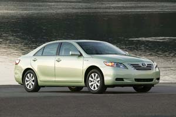
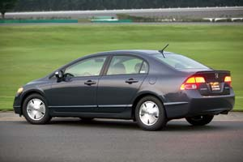
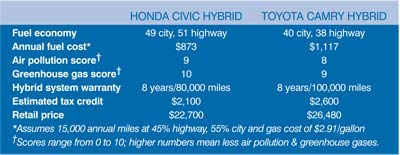

The Honda Civic and Toyota Camry - longtime best-selling cars trusted for their reliability and gas mileage - now are better than ever as gasoline-electric hybrids. While Honda has sold a hybrid Civic for four years, the 2006 version broke the mold of its predecessor with a sharper look and improved fuel economy - about 50 miles per gallon. Toyota also redesigned its Camry for the 2007 model year and just released a hybrid version with fuel economy of about 39 mpg.
These new hybrids expand the options available for soccer moms and environmentalists alike - in the wake of ever-rising gas prices and alarming news about global warming, nearly everyone would like a more fuel-efficient and eco-friendly car. Both hybrids cost about $3,000 more than their similarly equipped conventional counterparts, but state and federal tax credits can make up much of that difference. Depending on how soon you would buy one, the Civic Hybrid can earn a tax credit of $2,100; $2,600 for the Camry Hybrid. (For the latest information on tax incentives for hybrids, click here and here.)
Honda Civic Hybrid. The new Civic Hybrid includes the fourth generation of the company’s hybrid system. As with all hybrids, the engine shuts off whenever the car stops, saving gas. But unlike previous versions of the Civic Hybrid, Honda’s new system allows for all-electric operation while cruising, typically at low speeds of about 30 mph or less. This contributes to the car’s improved fuel economy; all told, it can go more than 600 miles on one tank of gas.
Bill Seibert, a Reynoldsburg, Ohio, resident who describes himself as an “avid environmentalist and hybrid enthusiast,” traded his 2003 Civic Hybrid for the 2006 version. Seibert says he averages between 48 and 53 mpg and loves all of the improvements. “It’s quieter, smoother and it can drive in electric only,” he says.
When it comes to minimizing air pollution and greenhouse gas emissions, the Civic Hybrid is among the best cars on the road today. Honda’s improved hybrid system also gives the car 23 percent more acceleration power (110 horsepower) than its predecessor.
Toyota Camry Hybrid. A hybrid version of America’s most popular family sedan (the Camry has outsold all other cars for much of the last decade) represents major steps forward for hybrid technology and our options for more fuel-efficient cars.
According to Dave Hermance, executive engineer for the advanced technology division of Toyota, the Camry Hybrid has the “most current, simplified and cost-effective” form of the company’s Hybrid Synergy Drive. As with all of Toyota’s hybrids, the Camry Hybrid is a “full” hybrid, meaning the electric motor alone can propel the vehicle, typically at low speeds.
I’ve driven all five hybrids from Toyota and Lexus (Toyota’s luxury line), and while the Prius (about 55 mpg) remains my personal favorite, the Camry Hybrid comes in a close second. Through city streets, it quietly zips around with seamless transitions between pure electric power and the gasoline engine. At higher speeds, the Camry Hybrid has plenty of punch with 187 horsepower, but always maintains a smooth ride. Inside, there’s ample room for the whole family. Outside, there are sharp lines and unique details - this isn’t the bland look of previous Camrys.
Other options. If you’re smarting from prices at the pump but the cost of a hybrid seems out of reach, consider the Honda Fit (about 34 mpg; $15,200), Nissan Versa (about 33 mpg; $12,000) or Toyota Yaris (about 36 mpg; $12,430). Look for more information on high-mpg cars in the December/January 2007 issue.
|
 TOYOTA MOTOR SALES, USA The 2007 Toyota Camry Hybrid achieves up to 40 miles per gallon. |
 HONDA MOTOR CO. The redesigned 2006 Honda Civic Hybrid achieves up to 49 miles per gallon. |
 Compare the Toyota Camry Hybrid and Honda Civic Hybrid. |